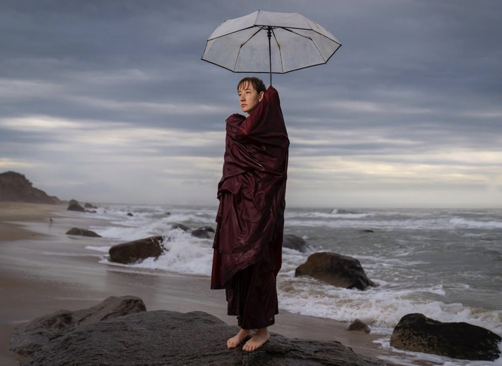
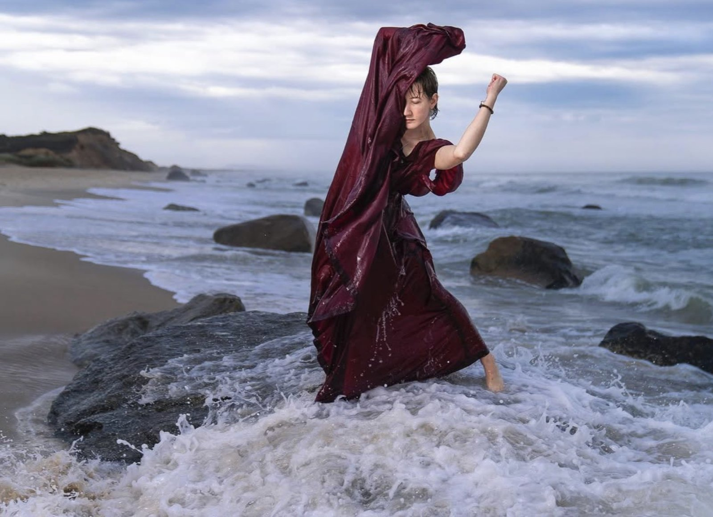

Born in Oregon and raised in New York, Sophia is an award-winning dance filmmaker, movement artist, and Pilates educator working at the intersection of movement, art, and technology.
Her dance films have screened internationally, including at Boundless in Brooklyn, where she won the 2016 48-Hour Dance Film Contest, Salamanca Moves in Hobart, Tasmania, Topanga Film Festival in California, and Praha Cinema 8 in Prague. Her camera work has also been shared by The Joyce Theater, and her work has been presented at Gibney in New York.
Sophia holds a BA in Dance from Oberlin College, where she received support from the Julie Taymor Arts and Culture Abroad Fund to study dance and documentary filmmaking in Prague. She has performed professionally with Emotions Dance Physical Theater.
An important part of her creative practice involves designing and building custom camera rigs that allow the camera to move dynamically with the body. Through these experiments, she explores the relationship between physical movement, perspective, and the technology of image-making. Her interest in movement extends beyond filmmaking into the study and practice of human movement.
Sophia is comprehensively certified through Polestar Pilates and is currently training as a Gyrotonic® apprentice teacher. Her teaching combines artistic sensitivity with a movement-science-informed approach, emphasizing individualized instruction, strength, mobility, and positive movement experiences.
Across her creative and educational work, Sophia investigates how we move, how we perceive movement, and how new technologies and artistic approaches can expand our understanding of the body.

Freestyle solo · And What!? Spring Show, Oberlin College, 2019